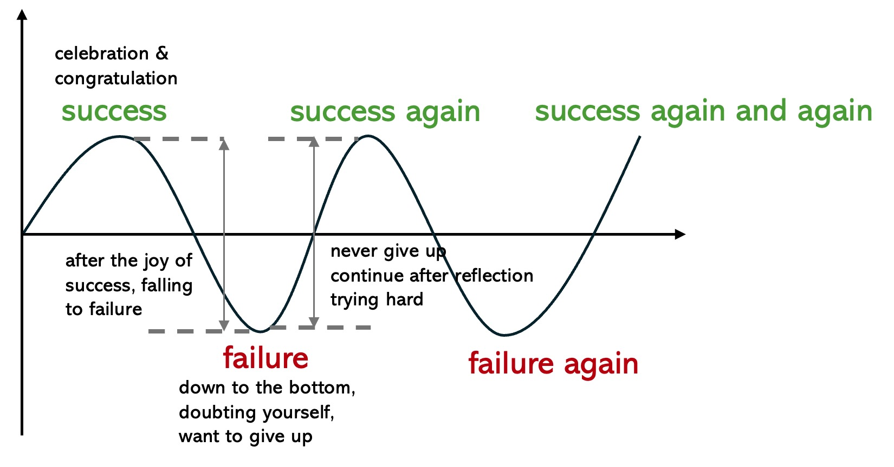
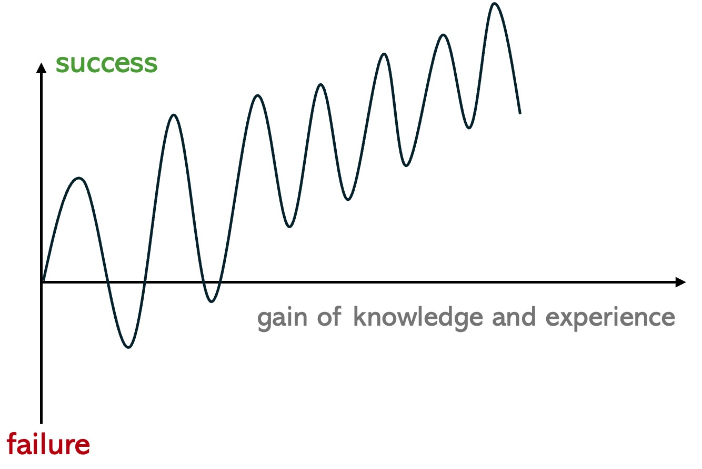
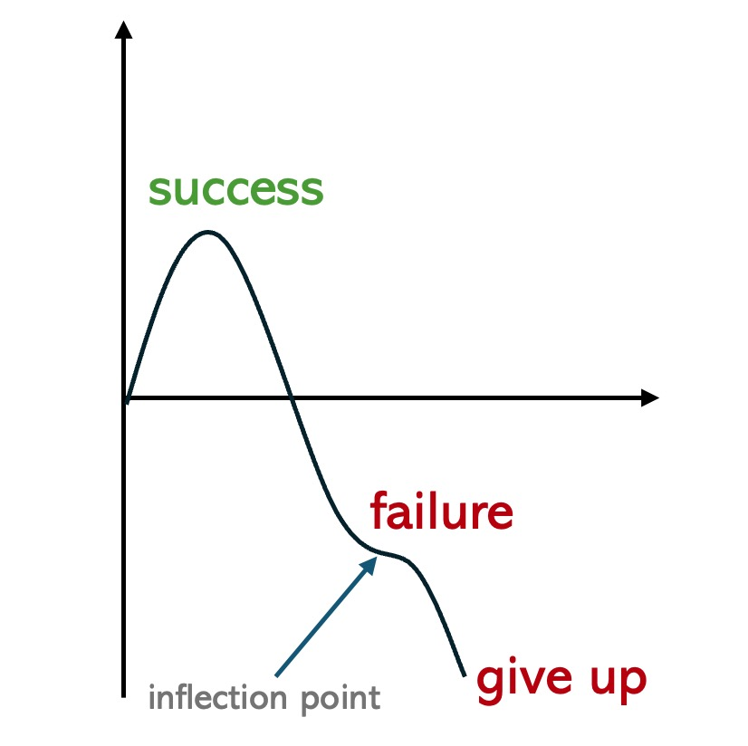

Blog3: 失败与成功的关系
English Version
成功和失败的关系是什么？有人用因果关系来定义它们，说失败是成功之母，这意味着失败是成功的必然条件。虽然我不否认这种观点，但我认为它只描述了成功和失败关系的一半。通过我不断的个人反思，我想出了一个新的模型：成功和失败形成一条不断上升的正弦曲线。
在数学上，正弦曲线是一个周期性波动的曲线。让我们以一个标准的正弦周期曲线为例。
\( y = \sin(x) \)
在这里，\( y \) 代表成功和失败的程度，\( x \) 代表时间。在一个完整的 \( 2\pi \) 周期内，曲线从 0 开始，在 \( \frac{\pi}{2} \) 处不断上升到 1，然后在下一个 \( \pi \) 周期内降到 -1，最后在 \( \frac{3\pi}{2} \) 处爬升回到 0。

图1：标准正弦曲线，展示了成功和失败的周期性本质。
根据这个模型，如图1所示，成功和失败呈现出正弦波的模式。起初，我们非常努力，不断攀升直到达到成功（Y=1）。但随后，我们不可避免地会面临失败，向 Y=-1 方向前进。在失败之后，我们再次开始攀升，直到达到下一个成功的高峰。这个周期不断重复。
这是我通过观察自己的亲身经历而得出的一个基本曲线。成功和失败总是交替出现。让我举几个个人例子。有一次，我提交了一篇CVPR论文，并开始与某人约会。我以为自己是成功的，但不久之后，论文被拒绝，关系也结束了，生活仿佛从巅峰跌入谷底。然而，我继续努力，论文成功转投并被ICCV接收，我也被博士项目录取。另一个例子是当我在思考研究方向时，绞尽脑汁却想不出好主意。经过一段时间的停滞后，我突然受到讨论或论文的启发，开启了一个新的研究课题。
Kaiming曾说过，95%的科研时间都是压抑的，只有5%的时间是开心的。这个周期不断重复。我认为成功和失败遵循类似的模式，就像正弦波一样。但正如我之前提到的，这是一条不断上升的正弦曲线。这个上升趋势是什么意思呢？
随着我们不断积累成功和失败的经验，我们的能力和知识会不断提高。如图2所示，这会将整个曲线向Y轴的正方向移动。换句话说，我们的成功带来的收益将超过失败带来的挫折。即使我们失败了，也不会像以前那样具有毁灭性，而是变成了一种挫折。只要我们能快速调整，我们就能继续向成功迈进。当然，这需要大量的人生经验。

图2：成功与失败之间不断上升的曲线
然而，也有例外情况。当有人无法承受失败的打击而选择放弃时，这条曲线的导数不会从0变为正数，而是变为负数。这在数学上被称为拐点。如果你在失败后选择放弃，你不会走向成功，而是会变得越来越糟。只有通过努力向前，你才能达到更高的成功点。

图3：当你选择放弃时的拐点
总之，当你成功时，不要过于高兴；为接下来的失败做好准备。当你失败时，不要放弃，因为你的努力会将你引向成功。